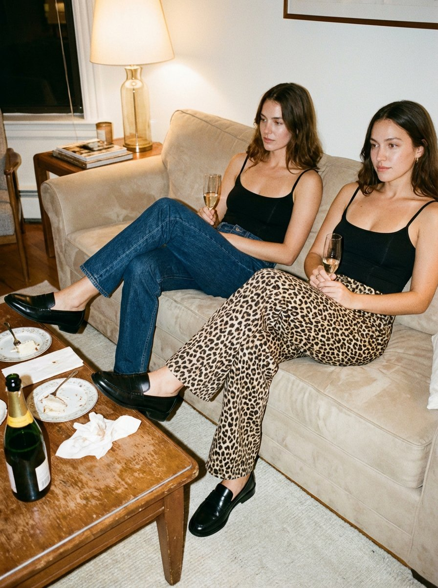

After the Thanksgiving Party
Two models lounge on a beige sofa with champagne and leopard-print trousers, shot as a 35mm editorial with soft flash and light grain.
| Creator | Keskin @craftian_keskin |
|---|---|
| Platform | X |
| Model | Midjourney (对比 Nano Banana Pro) |
| Likes | 575 |
| Posted | 2025-12-23 |
| Visual style | Film / retro |
| Regional vibe | American |
| Genre | Fashion / beauty |
| Mood | Lighthearted |
Prompt · from the post
Thanksgiving after-party scene, two models sitting casually on a soft beige sofa, cozy indoor lighting. One model wearing dark wash straight-leg denim, the other wearing leopard print wide-leg pants . Both wearing chic a fitted, scoop-neck top with thin straps,. Black leather loafers on feet, legs relaxed and crossed naturally. Champagne glasses in hands, coffee table, warm ambient light, subtle reflections on leather shoes. Mood: intimate, calm, slightly messy, post-dinner vibe. 35mm film photography, warm tone, soft flash, slight grain, editorial fashion photography, natural imperfections. No high heels, no sneakers, no boots. Focus on pants texture and loafers. --chaos 5 --ar 3:4 --raw --profile jgkhnkb nfzvcko --stylize 600